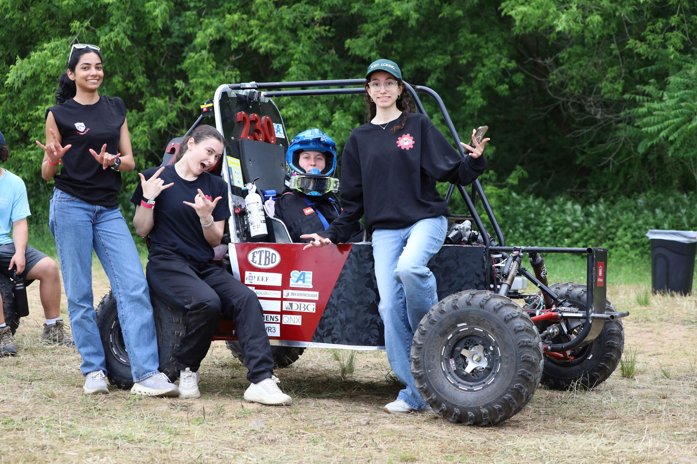
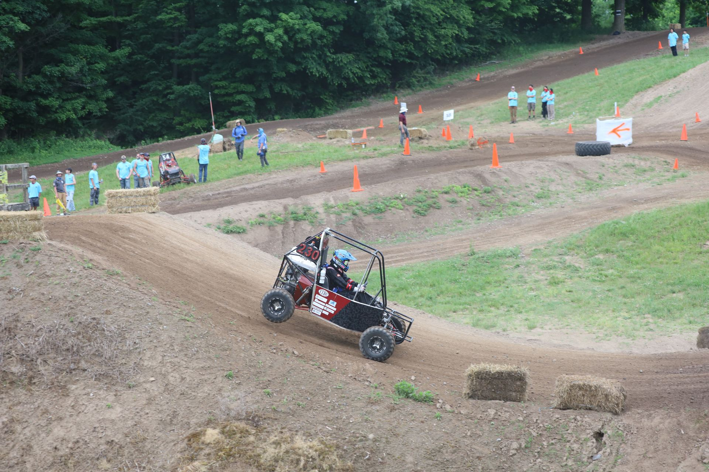
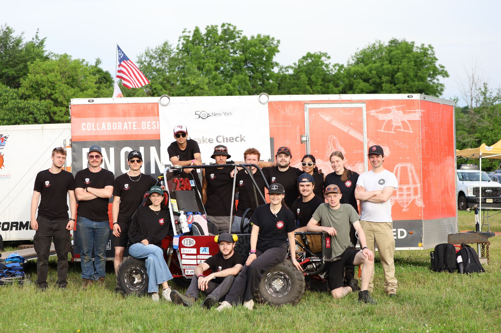
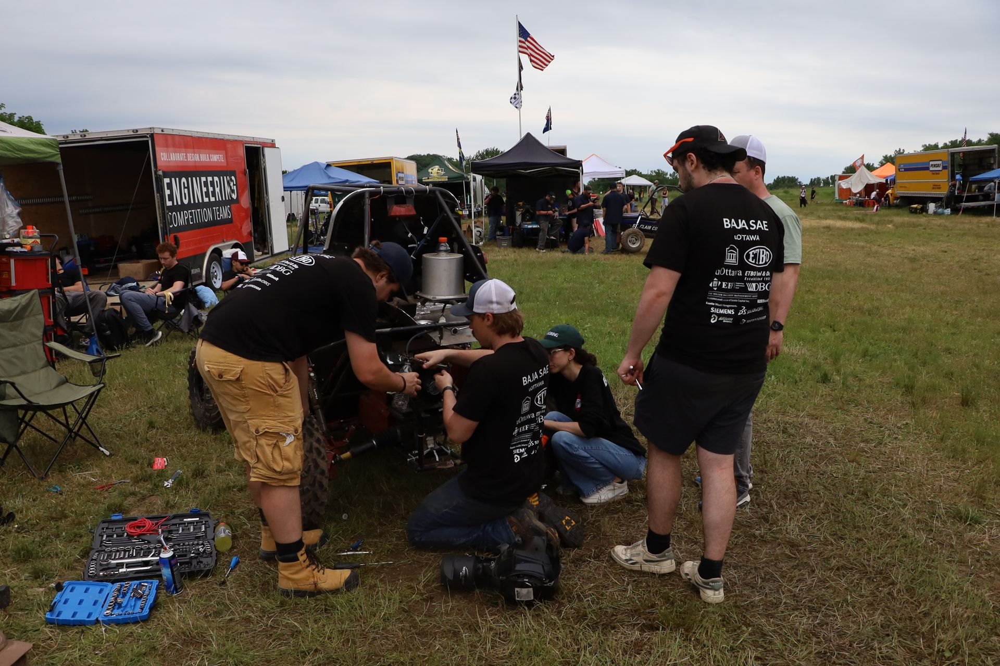

Static & business events
Technical inspection, design judging, a cost report and a sales presentation. Teams present and defend their design and project decisions to industry judges.

About us
Classroom theory, applied to a complete vehicle — under strict rules, a limited budget and fixed deadlines.
Baja SAE is an international collegiate design competition organized by SAE International. Student teams design, manufacture and race a single-seat, all-terrain vehicle that must withstand rough terrain, jumps, rocks and mud, and complete a multi-hour endurance race.
Every team uses the engine specified by the rules — currently a 14 hp Kohler CH440 with a restrictor plate — and meets the same safety and design requirements. Performance differences come down to vehicle design, weight, reliability and team execution, not the powertrain.
Teams are also judged on cost, design justification and a sales presentation, all evaluated by practising engineers from industry. It's a direct comparison of engineering judgement, manufacturing quality and project management.

Technical inspection, design judging, a cost report and a sales presentation. Teams present and defend their design and project decisions to industry judges.
Acceleration, hill climb or traction, manoeuvrability and suspension events assess vehicle performance under demanding off-road conditions.
A four-hour wheel-to-wheel race where reliability, engineering quality and pit-crew coordination matter as much as outright speed.
Rough Rider Racing (RRR) is the University of Ottawa's Baja SAE team and one of the Faculty of Engineering's competitive design teams.

Each RRR vehicle is designed from the ground up to meet Baja SAE rules, optimized for off-road performance and for serviceability — so components can be inspected, replaced and adjusted quickly between events.

Steel space-frame chassis with an integrated roll cage.

Double-wishbone, four-wheel independent suspension tuned for ground clearance, travel and stability, with steering designed for precise low-speed manoeuvring on tight courses.

The rules-specified engine drives a two-wheel-drive drivetrain through a tuned CVT. Hydraulic disc brakes at all four wheels.

Safety shutdown circuits, driver controls, sensors and data acquisition.
Placeholder — weight, wheelbase, track width, suspension travel, ground clearance, top speed.
The program runs on a two-year vehicle cycle: each season funds racing the current car and starting development of its replacement.
The team is organized into four technical subteams — Chassis, Suspension, Drivetrain and Electrical — and an Administration group responsible for finance, sponsorship, outreach and logistics.
Meet the subteamsCAD modelling, hand calculations, finite element analysis and design reviews.
Machining, welding, fabrication, wiring and assembly — done by students.
Track days and off-road testing to tune set-up and find failures before competition does.
Static judging, dynamic events and the endurance race — then feed the lessons into the next car.